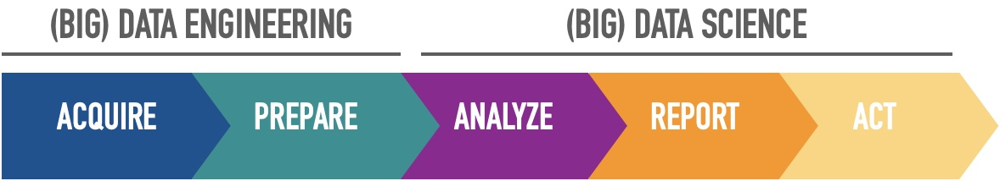

Chapter 3 The Big Data Workflow
To address the challenges of big data, innovative technologies are needed. Parallel, distributed computing paradigms, scalable machine learning algorithms, and real-time querying are key to analysis of big data. Distributed file systems, computing clusters, cloud computing, and data stores supporting data variety and agility are also necessary to provide the infrastructure for processing of big data. Workflows provide an intuitive, reusable, scalable and reproducible way to process big data to gain verifiable value from it in and enable application of same methods to different datasets.
Now that we’ve defined what Big Data is and how businesses and institutions can strategize around big data to begin building a purpose, let’s return to using data science to extract value from big data around the purpose or questions they defined. We can define data science as a multi-disciplinary craft that combines People teaming up around an application-specific Purpose that can be achieved through a Process, Big Data computing Platforms, and Programmability.
More specifically, when we think about the PROCESS, we can think about five different steps:
 These are five distinct activities that depend on each other. Let’s summarize each activity further before we go into the details of each.
Acquire includes anything that makes us retrieve data including; finding, accessing, acquiring, and moving data. It includes identification of and authenticated access to all related data. And transportation of data from sources to distributed files systems. It includes way to subset and match the data to regions or times of interest. As we sometimes refer to it as geo-spacial query.
The next activity is Prepare data. We divide the ‘’prepare data’’ activity into two steps based on the nature of the activity. Namely, explore data and pre-process data. The first step in data preparation involves literally looking at the data to understand its nature, what it means, its quality and format. It often takes a preliminary analysis of data, or at least a sample of the data, to understand it.
Once we know more about the data through exploratory analysis, the next step is the pre-processing of data for analysis. Pre-processing includes cleaning data, sub-setting or filtering data and creating data which programs can read and understand, such as modeling raw data into a more defined data model, or packaging it using a specific data format. If there are multiple data sets involved, this step also includes merging of multiple data sources, or streams.
The prepared data would then be passed onto the Analyze step, which involves selection of analytical techniques to use, building a model of the data, and analyzing results. This step can take a couple of iterations on its own or might require data scientists to go back to steps one and two to get more data or package data in a different way.
Step four includes the evaluation of analytical results, presenting them in a visual way, creating Reports that include an assessment of results with respect to success criteria. Activities in this step can often be referred to with terms like interpret, summarize, visualize, or post process.
The last step brings us back to the very first reason we do data science, the purpose (to obtain value out of data!). Reporting insights from analysis and determining actions from insights based on the purpose you initially defined is what we refer to as the Act step.
Note that this is an iterative process and findings from one step may require the previous step to be repeated with new information. Also, it’s very typical of job postings to be specialized in a single one (or maybe two) of these steps – you don’t have to be an expert in all of them!
Let’s dive into each one of them a little bit further.
3.1 Acquiring data
Step one in the (Big) Data Science process is data acquisition. The first step in acquiring data is to determine what data is available. Leave no stone unturned when it comes to finding the right data sources. You want to identify the right data related to your problem and make use of all the data that is relevant to your problem for your analysis.
Leaving out even a small amount of important data can lead to incorrect conclusions. Data comes from many places, local and remote, in many varieties, structured and unstructured.
There are many techniques and technologies for accessing these different types of data. For example, there is a large amount of data in conventional relational databases, similar to the big data structure of organizations. The preferred tool for accessing data in databases is Structured Query Language or SQL, which is supported by all relational database management systems. In addition, most database systems come with a graphical application environment that allows you to query and explore the data sets in the database.
Data can also exist in files such as text files and Excel spreadsheets. Scripting languages are generally used to obtain data from files. A scripting language is a high-level programming language that can be general purpose or specialized for specific functions. Common scripting languages with support for processing files are Java Script, Python, PHP, Perl, R and MATLAB, and many others.
An increasingly popular way to obtain data is from web sites. Web pages are written using a set of standards approved by a worldwide web consortium (W3C). This includes a variety of formats and services. One common format is Extensible Markup Language, or XML, which uses markup symbols or tabs to describe the content of a web page. Many websites also host web services that produce program access to their data (e.g. REST).
NoSQL storage systems are increasingly being used to manage a variety of data types in big data. These data warehouses are databases that do not represent data in a table format with columns and rows as with conventional relational databases. Examples of these data warehouses include Cassandra, MongoDB and HBASE (check out a comparison among the three here). NoSQL data stores provide APIs to allow users to access data. These APIs can be used directly or in an application that needs to access the data. Additionally, most NoSQL systems provide data access via a web service interface, such a REST.
An example of data acquisition: the WIFIRE project
The WIFIRE project acquires data from a variety of sources:
They store sensor data from weather stations in a relational database, and use SQL to retrieve this data from the database. This allows them to create models to identify weather patterns associated with potentially dangerous wind conditions.
To determine whether a particular weather station is currently experiencing potentially dangerous wind conditions (known as Santa Ana conditions), they access real time data using a web socket service.
At the same time, Tweets are retrieved using hashtags related to any fire that is occurring in the region. The Tweet messages are retrieved using the Twitter REST service. The idea is to determine the sentiment of these tweets using Natural Language Processing to see if people are expressing fear, anger, etc. about the nearby fire.
The combination of sensor data and tweet sentiments helps to give a sense of the urgency of the fire situation.
3.2 Preparing data
This includes exploring and pre-processing data.
Exploring data
After gathering the data required for your application, you may be tempted to immediately create models to analyze the data right away. Avoid this temptation.
The first step after receiving your data is to investigate it.
Data exploration is one of two steps in the data preparation process. To gain a better understanding of the specific characteristics of your data, you should conduct preliminary research. This step will involve searching for correlations, general trends, and outliers. Without this step, you will be unable to effectively use the data.
Correlation plots can be used to investigate the relationships between different variables in data.
Plotting the general trends of the variables (e.g. time-trends) will show you whether there is a consistent direction in which the values of these variables are moving, such as sales prices increasing or decreasing over time.
Plotting outliers will assist you in double-checking for measurement errors in the data. Outliers that are not errors may cause you to discover a rare event in some cases.
Summary statistics also provide numerical values to describe the data. Mean, median, range, and standard deviation are some basic summary statistics you should compute for your data set. These metrics will give you an idea of the nature of your data, or they can tell you if there is an issue with your data. For example, if the data’s age range includes negative numbers or a number much greater than 100, there is something suspicious in the data that should be investigated.
In this preliminary analysis step, visualization techniques also provide a quick, efficient, and generally very useful way to look at the data:
- A heat map can quickly show you where the hot spots are.
- Histograms depict the data distribution and can reveal unusual skewness or scatter.
- Boxplots are another type of plot used to depict data distribution.
- Line plots can show how data values change over time. Data spikes are also easy to spot.
- Scatter plots can demonstrate the relationship between two variables.
- …
What you gain by exploring your data is a better understanding of the complexity of the data you have to work with. This, in turn, will guide the rest of your process.
Pre-processing data
The raw data you obtain directly from your sources is never in the format required for analysis.
The data preprocessing step has two primary goals:
The first step is to CLEAN the data in order to address data quality issues, and the second step is to TRANSFORM the raw data so that it can be analyzed.
Cleaning the data
Addressing quality issues in your data is a critical part of data preparation. Real-world data is disorganized. There are numerous examples of quality issues with real-world application data, such as:
- Inconsistent data, e.g. a customer with two addresses;
- Missing values, e.g. missing information on some of the key variables/demographics;
- Duplicate values, e.g. in customer records, a customer’s address are recorded in two different locations and the two recordings contradict each other…;
- Invalid data, such as a six-digit zip code (although this should be avoided with proper processes);
- Outliers, though we have to differentiate between a rare event (a true outlier, properly recorded) and simply a typo/misrecording.
Depending on the project, we’ll probably have little control over how the data is collected because we get it downstream. Avoiding data quality issues as they arise is not always an option. So now that we have the data, we must address quality issues by detecting and correcting them. Here are some approaches to addressing these quality issues:
- We can get rid of data records that have missing values (though this might result in …?)
- Duplicate records can be combined. This will require a method for determining how to reconcile competing values. Depending on the project, it may make sense to keep the newer value (e.g. financial aid cases).
- In the case of invalid values, the best estimate for a reasonable value can be used. For example, if an employee’s age is missing, a reasonable value can be estimated based on the employee’s length of employment. Again, this is typically an arbitrary decision and any steps taken here must be properly documented and argued.
- Outliers can also be removed if they are irrelevant to the task.
In general, to effectively address data quality issues, it is necessary to have knowledge of the application, such as how the data were collected, the user population, and the intended uses of the application. This domain knowledge is required to make informed decisions about how to deal with incomplete or incorrect data.
Transforming the data
The second stage of data preparation involves transforming the cleaned data into the format required for analysis. This step can take on several different names (Data manipulation, data pre-processing, data wrangling, and even data munging). In this part of the process, the data engineer takes on several different types of operations, such as: * Scaling, * Transformation, * Feature (variable) selection, * Dimensionality reduction, * Data manipulation.
Scaling is the process of changing the range of values to be between a given range. For example, from zero to one. This is done to prevent certain characteristics with high values from dominating the results. For instance, in the analysis of data containing height and weight. The magnitude of the weight values is significantly greater than the magnitude of the height values. Scaling all values between zero and one equalizes the contributions of height and weight characteristics. This is typically done by standardization, i.e. calculating the z-score (subtracting the mean value and dividing it by its standard deviation).
Several data transformations can be applied to reduce noise and variability. Aggregation is one such transformation. Aggregated data generally produces less variable data, which can aid in analysis. Daily sales figures, for example, can fluctuate dramatically. Adding values to weekly or monthly sales figures yields comparable results. Other filtering techniques can also be used to remove data variability. This, of course, comes at the expense of less detailed data. As a result, these factors must be considered for the specific application.
Feature (variable) selection may include the removal of redundant or irrelevant entities, the combination of entities, and the creation of new entities. You may have discovered that two entities are related during the data exploration step. In that case, one of these features (variable) can be removed without affecting the analysis’s results. The purchase price of a product, for example, is likely to be correlated with the amount of sales tax paid. It will then be advantageous to eliminate the amount of sales tax. Eliminating redundant or irrelevant functions simplifies further analysis. In other cases, you may want to combine or create new features. It would make sense, for example, to include the applicant’s educational level as a feature in a loan approval request. There are also algorithms that can automatically determine the most important characteristics based on mathematical properties.
When a data set has a large number of dimensions, dimensionality reduction is useful. It entails identifying a smaller subset of dimensions that capture the majority of the variation in the data. This reduces the data dimensions while removing irrelevant entities and simplifying the analysis. Principal Component Analysis (PCA), is a popular dimensional reduction technique.
Raw data frequently needs to be manipulated in order for it to be in the proper format for analysis. For example, we may want to capture price changes for a specific market segment, such as real estate or health care, from samples that record daily changes in stock prices. This would necessitate determining which stocks fall into which market segment. Grouping them and possibly calculating the mean, range, and standard deviation for each group.
Data preparation is a very important part of the data science process. In fact, this is where you will spend most of your time in any data science effort. It can be a tedious process, but it is a crucial step. Always remember, garbage in, garbage out. If you don’t spend the time and effort to create good data for analysis, you won’t get good results no matter how sophisticated the analysis technique you are using.
3.3 Analyzing data
After you have thoroughly prepared your data, the next step is to analyze it. Data analysis entails creating a model from your data, which is referred to as input data. The analysis technique constructs a model from the input data. The output data is what your model generates (e.g. the prediction).
There are various types of problems, and thus various types of analysis techniques. We’ll be focusing on the main ones, which are regularization, classification (tree-based methods), and unsupervised methods such as clustering.
The most typical one is when your model must predict a numerical value instead of a category; this task is a regression problem. Predicting the price of a stock is an example of regression. The stock price is a numerical value, not something requiring a classification. Estimating the weekly sales of a new product or predicting a test score are two other examples of problems that can be solved with regression analysis. We will learn specific ML regression-techniques.
On the other hand, the goal of classification is to predict the category of the input data. In this case, predicting the weather as sunny, rainy, windy, or cloudy is an example of this. Another example is determining whether a tumor is benign or malignant. Because there are only two categories, this classification is known as a binary classification. Another classic example is recognizing handwritten digits as belonging to one of ten categories ranging from zero to nine.
Lastly, the goal of clustering is to organize similar items into groups. However, the main distinction with the classification problem is that we do not know beforehand what those groups are or what the ``true’’ classification is. As seen here, one example is segmenting a company’s customer base into distinct segments for more effective targeted marketing.
Modeling begins with selecting, depending on the type of problem, one of the techniques listed. The model is then built using the data you’ve prepared. Lastly, you apply the model to new data samples to validate it. Cross-validation tells you how well the model performs on the data that was used to build it. We’ll delve deeper into this when starting the ML section of the course (specifically the ML framework). However, just as an overview, ot is common practice to divide the prepared data into a set of data for constructing the model (training) and a set of data for evaluating the model after it has been built (testing). You can also use new data prepared in the same manner as the data used to build the model.
The model’s evaluation (validation) is dependent on the analysis techniques used. For example, for each sample (data point) in your input data for classification and regression, you will have the ``true’’ correct output. Therefore, the model can be validated by comparing the correct output to the output predicted by the model.
On the other hand, the groups formed as a result of clustering should be examined to see if they make sense for your application. For example, do the customer segments accurately represent your customer base? Are they beneficial in your targeted marketing campaigns?
You will be able to determine the next steps after you have evaluated (validated) your model to get a sense of its performance on your data. Some questions to consider include whether the analysis should be performed with more data in order to improve model performance. Would using different data types be beneficial? Is it difficult, for example, to distinguish customers from different regions in your clustering results? Is it possible to generate finer-grained customer segments by including zip code in your input data? Do the analysis results point to a more in-depth examination of some aspect of the problem? Predicting sunny weather, for example, yields excellent results, but rainy weather forecasting yields only average results. This means you should look more closely at your examples for rainy weather. Perhaps you simply require more rainy weather data points, or perhaps there are some anomalies in those data points Perhaps there is some missing data that must be included in order to fully capture rainy weather.
The ideal situation would be for your model to perform exceptionally well in terms of the success criteria established when you defined the problem at the start of the project. In that case, you’re ready to move on to communicating and acting on the findings of your analysis.
Data analysis entails selecting the best technique for your problem, developing the model using cross-validation techniques, and analyzing the results.
3.4 Communicating results
The fourth step in our data science process is to report the findings of our research. This is a critical step in communicating your findings and making a case for subsequent actions. It can take on different forms depending on your audience and should not be taken lightly. So, where to begin?
The first step is to review the results of your analysis and decide what to present or report as the greatest value. These are the questions you should ask yourself when deciding what to present.
What exactly is the punchline?
What are the primary outcomes? What added value do these results provide, and what contribution can the model make to the application? How do the results stack up against the success criteria established at the start of the project? The answers to these questions should be included in your report or presentation, so make them the main themes and collect facts to support them.
Keep in mind that not all of your outcomes will be positive. Your analysis may yield results that contradict your hypothesis, or it may yield inconclusive or perplexing results. You must also show these results. Some of these findings may be perplexing to domain experts, and inconclusive findings may necessitate further investigation.
Remember that the purpose of reporting your findings is to determine the next step.
All findings must be presented in order for informed decisions to be made. Visualization is an important tool for communicating your findings. Scatter plots, line graphs, heat maps, and other graphs are effective ways to visually present your results. However, this time, instead of plotting the input data, you plot the output data using similar tools.
You should also consider having backup tables with details of your analysis in case someone wants to dig deeper into the results.
You want to report your findings by presenting your results and main added value using interactive visualization tools.
3.5 Turning insights into action
Now that we’ve evaluated the results of your analysis and generated reports on their potential value, the next step is to decide what action or actions to take based on the insights gained.
Remember why we started collecting and analyzing data in the first place: to find actionable information within all of these data sets in order to answer questions or improve business processes.
Is there something in your process, for example, that you should change to eliminate bottlenecks? Is there any information that should be added to your application to improve its accuracy? Should you divide your population into more defined groups for better targeted marketing? This is the first step toward putting ideas into action.
Now that you’ve decided what action to take, the next step is to figure out how to carry it out. What is required to incorporate this action into your process or application? What steps should be taken to automate it? Stakeholders must be identified and included in the change process. We must monitor and measure the impact of the action on the process or application, just as we would with any other process improvement change.
An evaluation results from assessing the impact. The next steps will be determined by evaluating the outcomes of the implemented action. Is there anything else that needs to be done to get even better results? What information must be reviewed? Is there anything else that needs to be looked into? Let us not forget, for example, what big data enables us to do. Real-time actions based on high-speed data streaming. We must define which aspects of our business require real-time action in order to influence operations or customer interactions. Once we’ve defined these real-time actions, we must ensure that there are automated systems or processes in place to carry them out, as well as failover in the event of a problem.
Big data and data science are only useful if the insights can be translated into actions that are carefully defined and evaluated.